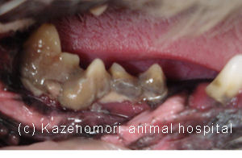
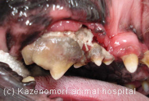

** Topic 2012年 4月**

●短頭種の歯周病
犬の中でも、鼻が低い種類の犬（シーズーやパグ、ボストンテリアなど）は、比較的若い年齢から、歯周病になる傾向にあるようです。その原因の１つが、歯並び（歯列）があげられます。犬の歯の大きさは、小型犬であれば、比較的大きさに違いはありませんが、短頭種の場合、歯列弓と呼ばれる歯の植立する位置が狭く、特に臼歯が込み合って植立しなくてはなりません。そのため、回転したり、口蓋側や舌側の内側にはえている歯が多くみられます。その場合、食べかすが歯と歯の間に、たまりやすく歯周病になりやすいのです。
下の写真は、シーズーの非常に重度の歯周病にかかってしまった症例の口腔内の写真です。ドライフードとウエットフードのどちらもたべるのですが、食べ方がおかしい！と、飼い主さんが気付かれ、来院されました。
右上顎；臼歯全体に歯石が付き、犬歯と大きな第4前臼歯の間に、前臼歯３本がまとまるようにはえています。
右下顎；写真中央の第4前臼歯が外に外転して植立
してます。この患者さんは、歯周病がかなり進行し
た状態でしたので、多くの歯を抜歯する結果になり
ましたが、治療後、以前よりもとても元気になっ
と連絡を頂きました。うれしい！ですね。